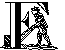
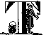
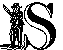

akten:
Schlaraffia ist eine am 10. Oktober 1859 in Prag gegründete Männervereinigung. Mittlerweile weltweit agierend ist sie die einzige Vereinigung, in der nur Deutsch gesprochen wird. Ziele der Schlaraffen sind die Pflege von Freundschaft, Kunst und Humor. In 263 Vereinen (Stand 2015) sind mehr als 10.000 Mitglieder organisiert. Der Wahlspruch der Schlaraffen lautet „In Arte Voluptas“ - „In der Kunst liegt das Vergnügen“.
rivia:
Die Schlaraffen sind schon ein eigenes Völkchen.
Sie treffen sich im Winterhalbjahr (auf der Nordhalbkugel von Oktober bis April, auf der Südhalbkugel von April bis Oktober) zu ihren Sitzungen, Sippungen genannt, einmal pro Woche in ihrer Schlaraffenburg. Im Sommerhalbjahr treffen sie sich zu gelegentlichen Sommerfesten, Krystallinen genannt.
Dieser Männerbund pflegt seine eigene Sprache, das Schlaraffenlatein. Wie oben schon angedeutet, spricht man von Sippungen, das Auto ist ein Benzinross, ein Feuerzeug eine Brandfackel und die Schwiegermutter ist der Burgschreck.
Sie haben auch ihre eigene Zeitrechnung beginnend mit dem Gründungsdatum. Das heißt, 2015 ist das 156. Jahr seit der Gründung.
Schlaraffia ist kein Geheimbund. Mitglied kann jeder Mann von unbescholtenem Ruf und gesicherter Stellung werden. Die Satzung regelt, dass aus einem von einem Schlaraffen eingeführten Gast, „Pilger“ genannt, nach einigen Sippungen ein „Prüfling“, anschließend ein „Knappe“, schließlich ein „Junker“ und letztendlich ein „Ritter“ wird. Dies ist natürlich mit den jeweiligen Prüfungen verbunden. Der Ritter erhält auch einen neuen meist witzig, persiflierenden Namen. Erst jetzt kann das Mitglied, der „Sasse“, mit allen Rechten und Pflichten am ritterlichen Spiel mit geistigen Waffen teilnehmen.
Ein Schlaraffe ist nie allein. Geht er auf Reisen, so wird er in der ganzen Welt mit offenen Armen in anderen Reychen aufgenommen. Die Freundschaft zu Sassen anderer Reyche ist ein wichtiger Bestandteil des schlaraffischen Lebens. So kann jeder Schlaraffe im „Vademecum“ nachlesen, wo und wann eine Sippung in einem anderen Reych abgehalten wird.
 ründung:
ründung:
1859 in Prag, der Hauptstadt des damaligen Königreiches Böhmen in der Habsburger Monarchie, gehörten eine Reihe deutschsprachiger Künstler, Sänger, Schauspieler, aber auch Geschäftsleute, dem „Nobelklub“ Arcadia an. Aufgrund ihrer gesellschaftlichen Stellung wurden sie dort beleidigend als „Proletarier“ bezeichnet. Unter Protest kündigten sie ihre Mitgliedschaft und gründeten einen eigenen Verein. Diesen nannten sie spaßhaft und ironisch den „Proletarierbund“, den sie später in „Schlaraffia“ umbenannten.
Schnell verbreitete sich die Schlaraffische Idee. So entstanden bis 1934 insgesamt 305 Reyche.
Die Zeit des Nationalsozialismus war auch für Schlaraffia schwer. Dem Verbot international verbundener Vereinigungen durch die nationalsozialistische Regierung in Deutschland fielen viele Schlaraffenreyche in Deutschland und im Osten Europas zum Opfer. Der Geist der überlebenden Schlaraffen war jedoch nicht gebrochen und Schlaraffia regenerierte sich nach dem Krieg wieder weltweit.
 rima Canadensis:
rima Canadensis:
1957 wurde das erste kanadische schlaraffische Reych - unsere Prima Canadensis - von Vater Erich („Maxi-muß“) und Sohn Robert („PRAGAmemnon“) Jüthner-Krtschan, aus dem Reych Claudium forum in Klagenfurt in Österreich kommend, in Edmonton, Alberta gegründet.
Im Laufe der fast sechs Jahrzehnte der Prima Canadensis haben sich viele um Schlaraffia verdient gemacht. All deren Namen zu erwähnen würde über den Rahmen dieser Betrachtungen gehen. Es soll jedoch angeführt werden, dass Ritter „Jan Maat“ für zehn Jahre das Amt des Vorsitzenden der „Schlaraffia Nordamerika“, die alle Reyche in USA, Kanada und Mexiko umfasst, bekleidete. Zehn Jahre wirkte er als „Allschlaraffenrat“, in der „Allschlaraffia“ benannten Dachorganisation, der alle Schlaraffen in der Welt angehören.
chlaraffia in Kanada:
1962 wurde das Reych „Porta Ontariae“ in Toronto, Ontario gegründet 1970 kam die „Rocky Mountania“ in Calgary, Alberta hinzu, gefolgt von „Fort Okanagan“ in Kelowna, British Columbia, 1976, „Am Silbersee“ in Vernon, British Columbia, 1987, „Porta Pacifica“ in Vancouver, British Columbia, 1988 und „Kamlupsia“ in Kamloops, British Columbia, 1997. Nach vielen Jahren als Stammtisch, Feldlager und Colonie wurde inmitten der Corona-Pandemie, am 10.10.2020, die Colonie Gloria Victoria zum Reych erhoben. Eine in der Geschichte der Schlaraffia wohl einmalige Feier, die in der Heimburg des Mitbegründers Dieter Bloedorn, schlaraffisch Ritter Kielius stattfand. Nur er, Martin Schlegel (Ritter Raoul) und der vom Allschlaraffenrat beauftragte Ritter Schöppche aus unserem Reych waren anwesend, als die Heimburg geweiht wurde. Die Mitglieder der Colonie und zahlreiche Gäste aus aller Welt konnten der Feier via Videoschaltung folgen und auch ihre Beiträge übermitteln.
Leider mussten die Reyche „Am Silbersee“ 2008 und „Fort Okanagan“ 2009 auf Grund mangelnder Mitglieder wieder geschlossen werden.
Website hosting donated by array innovations
Schlaraffia® und Allschlaraffia® are Registred Trademarks of Verband Allschlaraffia® in Bern (CH)